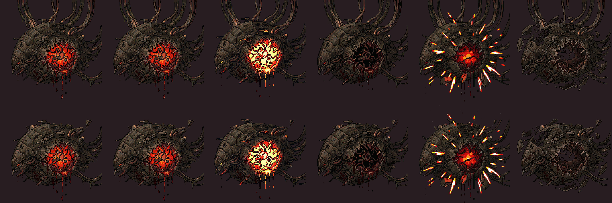

160 px/s · 0,4 s, a nave no meio e depois colada no alto

O degrau do meio (3 pulsos). A nave lê o padrão na velocidade real dela. Na segunda investida ela começa colada no alto: as gotas de cima respingam na parede e continuam.
As suas escolhas: a SEGURA, e a velocidade que você achou jogando (?lavaVel=160&lavaEntre=0.4):
160 px/s e 0,4 s entre pulsos. O último degrau mantém a proporção de antes: 190 px/s e 0,32 s. A RECUA saiu do código.
A parede (o seu pedido: "a nave pode ir até na linha da tela, ou seja, as lavas precisam passar a parede para punir quem tenta ficar embaixo ou em cima"): na borda da arena a gota respinga e segue (as brasas e o som do impacto, como antes) até sair da tela. A faixa entre a parede e a linha da tela não é mais esconderijo.
O degrau do meio (3 pulsos). A nave lê o padrão na velocidade real dela. Na segunda investida ela começa colada no alto: as gotas de cima respingam na parede e continuam.
Medido em jogo: a nave parada leva lava em todas as alturas, inclusive colada na linha da tela (y = 8 e y = 208). A nave lendo: 0 toques nos degraus do meio e do último (no alto, no meio e embaixo). No degrau cheio o robô levou 2 toques no limite exato (a gota encostando no canto do nariz, 0 px de sobreposição): é falta de precisão do robô, não um vão que falte. O seu teste jogando é o que vale.
Um achado para você decidir: a figura de 7 raios cobre a tela inteira até x ≈ 80, onde a nave fica (o maior fio parado seguro é de 7 px, nos cantos). Colado no Guardião, de x ≈ 90 em diante, ela não alcança os cantos de cima e de baixo da tela: sobra um bolsão parado de 10 a 39 px na cara dele. Deixo como está (encostar nele durante a investida já é risco)? Ou abro o leque (9 raios, mais gotas por pulso) para fechar esse canto?
E uma decisão minha para você confirmar: o último degrau (33–0%) a 190 px/s e 0,32 s entre pulsos (a proporção de antes sobre os seus 160/0,4). Confirma, ou o último fica igual aos outros?
A sua direção: "eu priorizo muito a perspectiva de bullet hell, ou seja, são formatos mais geométricos que induzem o jogador a ler o ataque, cobra quem demora ou não percebe o padrão". O leque com vão sorteado saiu. No lugar dele:
#e4270f, #ce1c0b, #8f150e, realce
#f85732), e metade da densidade no raio reto, para o rastro não borrar a figura.A decisão em aberto: a parada. No filme, as duas versões no degrau do meio (3 pulsos, 200 px/s, 0,3 s entre eles). A nave lê o padrão: a cada pulso que chega, ela desliza até o vão mais perto, na velocidade real dela (110 px/s).

SEGURA: ele fica preso na parada com a coleira tensa, um mini-tranco a cada pulso, e só depois volta. A investida fica ~0,6 s mais longa. RECUA: os pulsos saem do miolo enquanto os cabos o puxam de volta.
Medido em jogo (2 investidas por versão, a nave invulnerável contando os toques de lava):
A minha recomendação é a SEGURA: arcos concêntricos e igualmente espaçados, a figura que se ensina, e o Guardião preso puxando a coleira em cada pulso. A RECUA é mais curta e mais solta, mas a geometria varia a cada investida.
O leque, no tranco: a inércia arranca a lava do miolo. São 5 gotas (6 a partir de 66% de vida, 7 a partir de 33%), em arco com a gravidade da lava da F4, e um vão sorteado a cada investida.
A salva mirada: a mesma abertura, o mesmo número (3/4/5) e a mesma cadência; o centro aponta para a nave. Com 4, o meio seria um vão em cima da nave, então o leque anda meio passo para um lado sorteado e um glóbulo vai nela.

Duas investidas (nave alta, depois baixa). Depois do tranco, a nave desliza até o vão a 150 px/s para mostrar o corredor (invulnerável e parada, ela só "comeria" as gotas). Na volta à estação, a salva mira a nave.
Perguntas: o leque lê bem e é justo? O vão está largo o bastante? A velocidade (~1 s para cruzar) está boa?
A escolha: o tranco A, seco (o mais natural). Ele já é o padrão do jogo.
Os cabos soltos que você marcou são os que a arte arrasta para a direita. Eles acabavam na borda do quadro de 256 px: na estação ficavam fora da tela, mas na parada apareciam presos em nada. Agora cada ponta vira corda, com a mesma textura, na direção em que o cabo pintado sai, até o hospedeiro: fora da tela à direita, ou no teto (os dois de cima sobem para o canto). Eles também esticam na investida e vibram no tranco.

A nave alta, depois baixa. Na parada, os cabos de trás saem esticados para a direita e para o canto de cima.
Na velocidade real, no treino da F4 (nave invulnerável e parada). Cada GIF tem duas investidas: a nave alta, depois
baixa. No jogo: http://localhost:5174/?tranco=A (ou B, C) e o treino K.

Passa 3 px da parada e volta em 0,12 s. Vibração média, tremor de câmera leve.

Passa 8 px e quica duas vezes em 0,45 s. Vibração menor, a coleira "mola".

Passa 4 px e volta em 0,15 s. Os cabos vibram forte e a câmera treme mais.
O que você viu: na chegada, o Guardião ainda está à direita da estação, além do alcance da coleira. Os cabos ficavam presos no máximo, chegavam retos e deitados na raiz, e a ponta cortada da corda saía para fora do toco pintado: o picotado perto do casco.

Do nascimento à estação, e ~2 s parado.
Os cabos do alto saíram das quatro artes (o estático, a respiração, a morte e o destruído). Prova pixel a pixel:
0 pixels diferentes fora da máscara nas quatro. Os originais estão em assets/raw/guardiao-com-cabos/.
